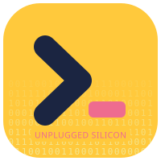

Unplugged SiliconFree, offline, private AI on your own computer
Unplugged Silicon is a YouTube channel about running AI models locally: speech-to-text, chatbots, image generators and more, with no account, no cloud and the internet switched off. Every model gets two videos, a step-by-step setup and a deep dive into how it works inside.
YouTube channel · Written guides (blog) · Code from the videos
Unplugged Publish
Unplugged Publish is a small private tool the channel uses to publish its own videos. Signed in as the channel's Google account, it sets each video's title, description, thumbnail and captions on YouTube, and creates the matching post on the channel's Blogger blog. It is used only by the channel owner, on the channel's own content. It is not offered to other users.
See the privacy policy and terms of service.